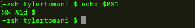
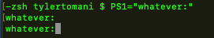

Just like the path we can access the command prompt with $PS1
We can change the prompt temporaily by typing
PS1="whatever :"

change the $PS1 variable inside the ~/.zshrc to make change permenant
export PS1="--> :"
Command Prompt Format Codes
| Bash | Zsh | Output Description |
|---|---|---|
| \u | %n | Username |
| \s | %N | Current Shell |
| \w | %d | Current working directory |
| \W | %1d | Basename of current working |
| \H | %M | Hostname |
| \h | %m | Hostname up to first period |
| \! | %! | History number of this command |
| Bash | Zsh | Output Description |
|---|---|---|
| \d | %w | Date in weekday-date format |
| \A | %T | Time in 24Hour HH:MM format |
| \t | %* | Time in 24hour HH:MM:SS format |
| \@ | %t | Time in 12hour HH:MM am/pm format |
| \D{format} | %D{format} | Use strftime format (%Y-%M-%d) |